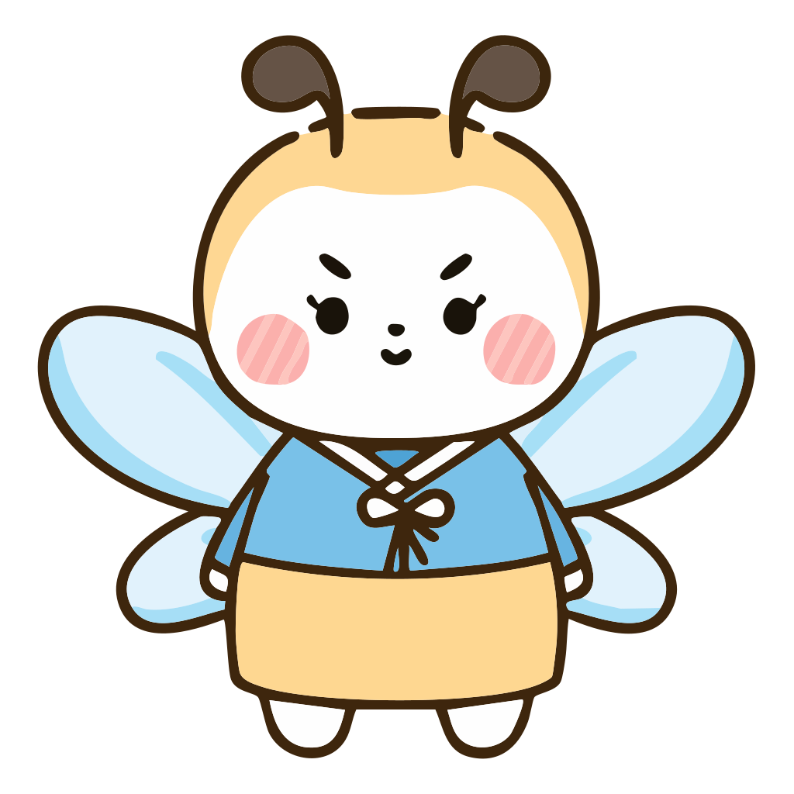
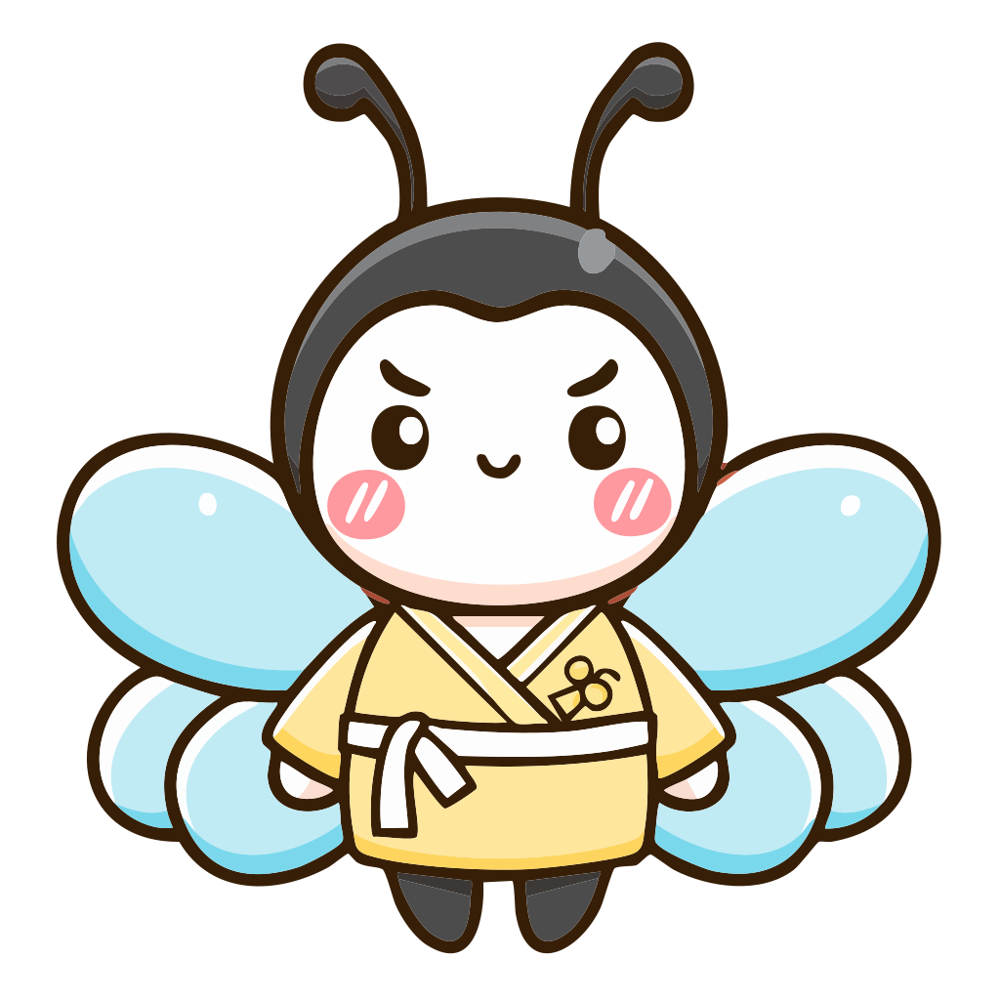
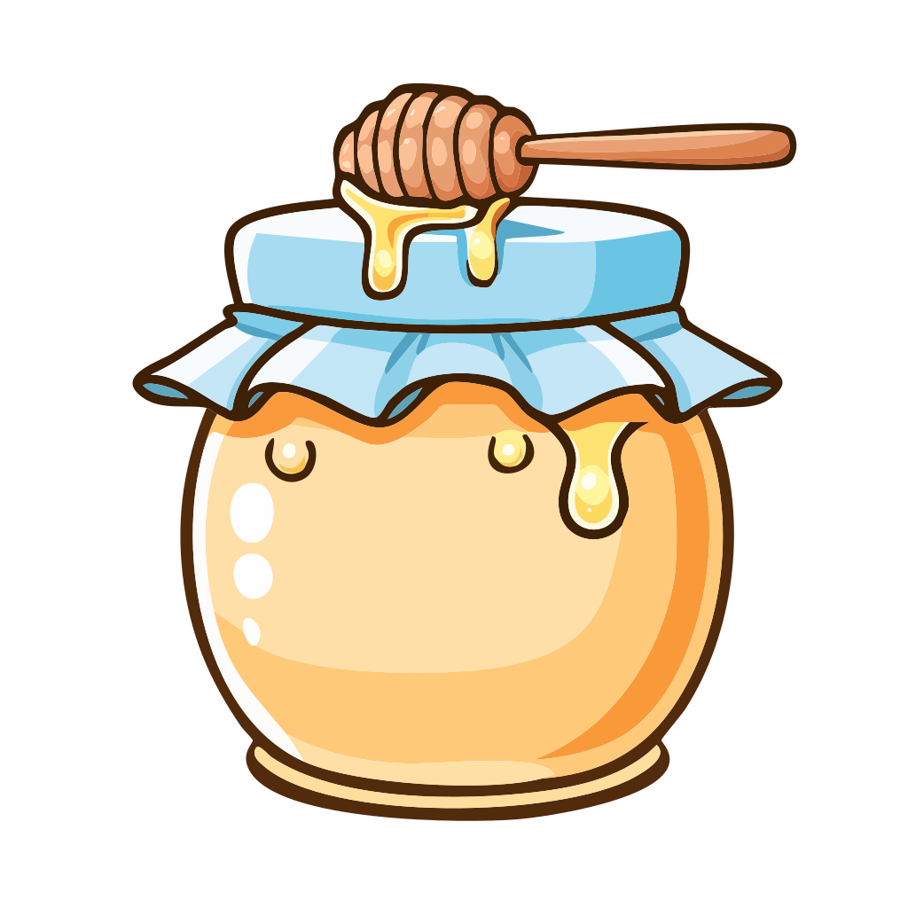

편안한 언어를 선택해 주세요.
Please select your language.

한국의 전통 명리학(Korean Fortune)은 미신이 아닙니다. 태어난 계절과 자연의 기운을 바탕으로 타고난 운명의 흐름을 읽어내는 지혜입니다.
당신이 미처 몰랐던 내면의 풍경을 따뜻하고 진정성 있는 이야기로 풀어드립니다.

마음속 풍경을 이루는 기운들이 도착했습니다.
당신만을 위해 정성껏 쓴 다정한 편지를 확인해 보세요.
자, 이제 당신의 마음속 풍경을 보여드릴게요.